CS184/284A Spring 2025 Homework 3 Write-Up
Link to webpage: cal-cs184-student/hw-webpages-xay-writeup
Link to GitHub repository: cal-cs184-student/sp25-hw3-xhw3

Overview
(TODO)Part 1: Ray Generation and Scene Intersection
Ray Generation pipelinefor each pixel (x,y):
for each sample:
// 1. Generate normalized coordinates
x_norm = (x + random_offset) / width
y_norm = (y + random_offset) / height
// 2. Generate camera ray
ray = camera->generate_ray(x_norm, y_norm)
// 3. Trace ray through scene
radiance = est_radiance_global_illumination(ray)
For the triangle intersection, I used Möller-Trumbore algorithm
which computes both the intersection point and barycentric coordinates in a single calculation. The algorithm starts by calculating two edge vectors of the triangle (edge1 and edge2) from vertex v1. Then calculates a vector h as the cross product of the ray direction and edge2,
followed by calculating the determinant using the dot product of edge1 and h. If the determinant is close to zero, the ray is considered parallel to the triangle, and we return false. Otherwise, we proceed by calculating the vector s from vertex v1 to the ray origin and use
it to find the barycentric coordinates (beta and gamma) through a series of dot products and cross products. The third barycentric coordinate (alpha) is calculated as one minus the sum of beta and gamma. If any barycentric coordinate is negative or if their sum exceeds 1, the intersection point lies
outside the triangle, and we return false. At the end, we calculate the intersection distance t and verify it falls within the ray's valid range (min_t to max_t).
Here are some of the results from the Ray intersections:
|
|

|
|
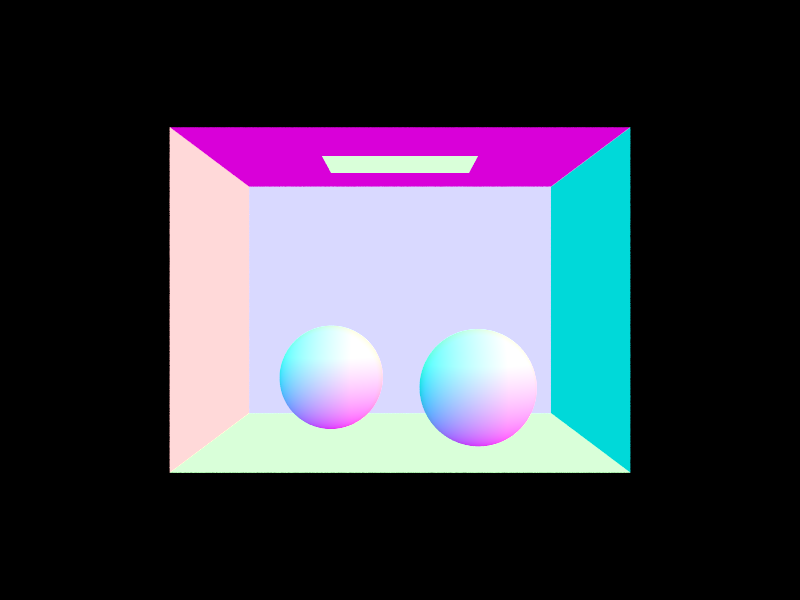
|
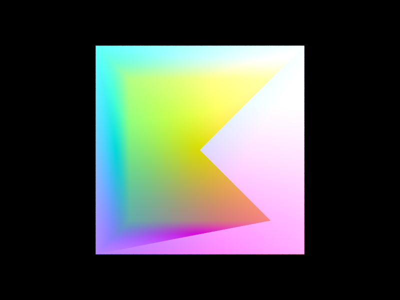
|
Part 2: Bounding Volume Hierarchy
BVH construction algorithmFor this method, I uses the Mean of Centroids heuristic along the axis with the largest extent. Below is the algorithm construction:
- Create an empty bounding box and calculate the number of primitives
- Check if there are no primitives (size = 0)
- Iterate through all primitives to:
- Expand the overall bounding box to include it
- Add the primitive's centroid to a running sum
- Create a new BVH node with the computed bounding box
- Check if the number of primitives is small enough (≤ max_leaf_size)
- If true, create a leaf node by setting start and end iterators
- Return the leaf node (base case)
- Determine the axis with the largest extent:
- Start with X-axis (axis = 0)
- If Y-extent > X-extent, switch to Y-axis (axis = 1)
- If Z-extent > current axis extent, switch to Z-axis (axis = 2)
- Calculate the mean of all centroids by dividing the sum by the number of primitives
- Use the coordinate of this mean along the chosen axis as the split point
- Partition the primitives into two groups using std::partition:
- Left group: centroids < split point
- Right group: centroids ≥ split point
- Check if all primitives ended up on one side (middle = start or middle = end)
- If true, fall back to a median split:
- Set middle to start + (size/2)
- Use std::nth_element to find the median primitive
- Recursively construct both subtrees and return the completed node:
- Build left subtree with primitives [start, middle)
- Build right subtree with primitives [middle, end)
Here are some of the results from the BVH construction:
|
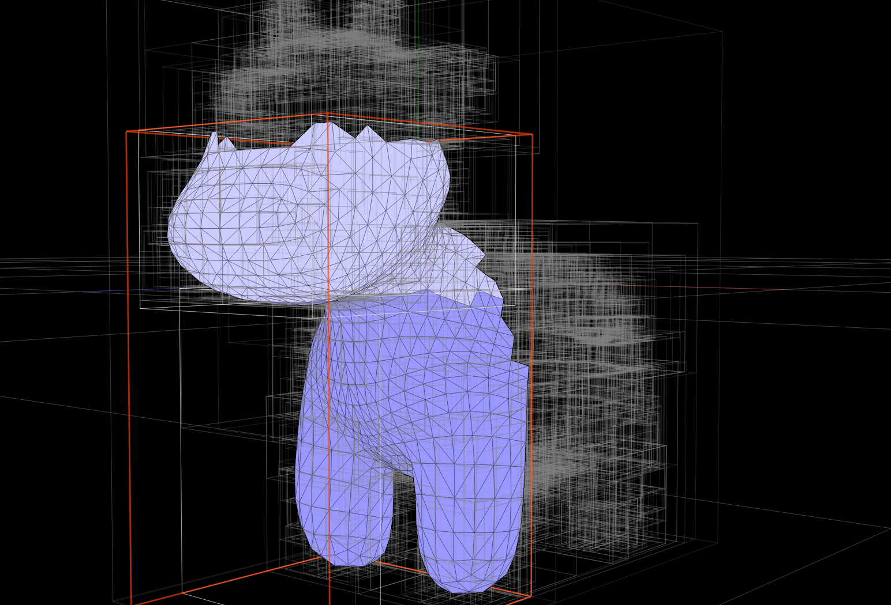
|
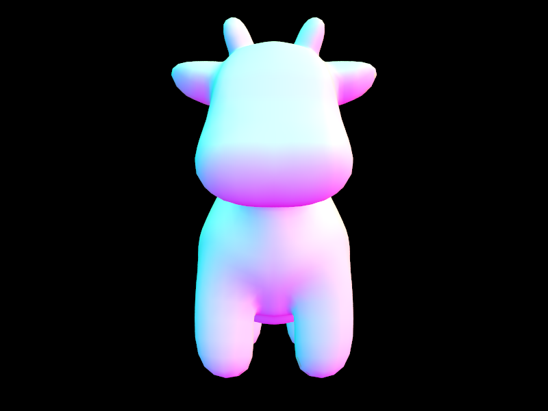
|
|
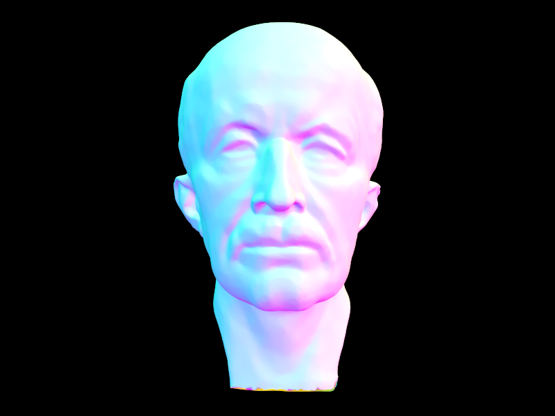
|
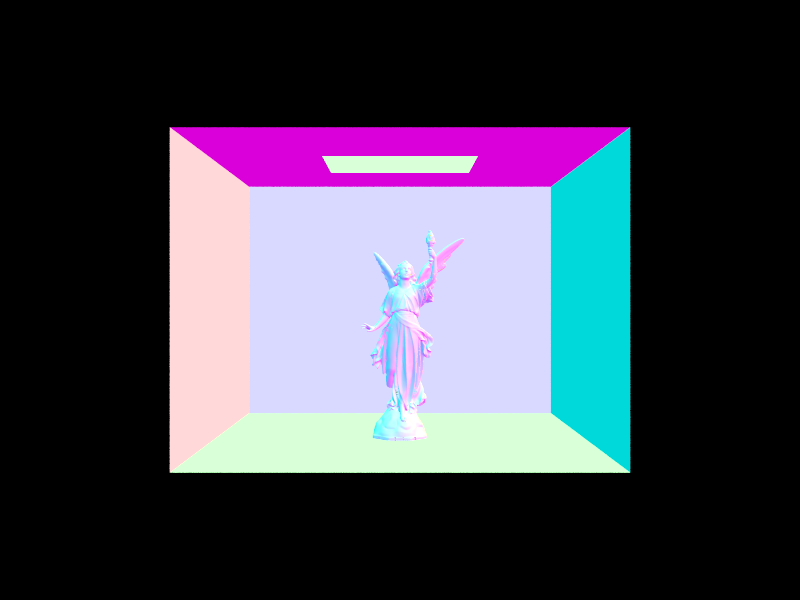
|
|
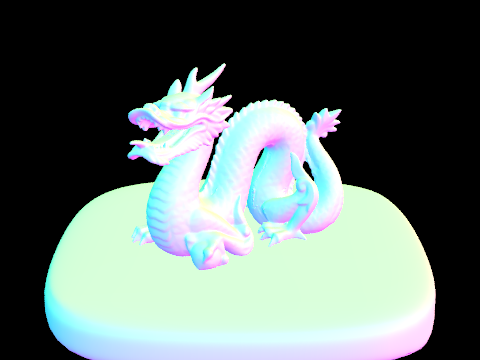
|
|
For cow.dae (5,856 primitives) BVH contruction take 0.0008 sec while maxplanck.dae (50,801 primitives) take 0.0082 sec. This demonstrates the BVH's O(log n) traversal efficiency and For more complex geometry, the Stanford Dragon (105,120 primitives), rendering with BVH approximately 4.4 million rays per second take around 7.1 intersection tests per ray on average . If we compare that without BVH, each ray would need to test against every primitive requiring it's own primitive intersection test per ray. So, the spatial median split strategy proves effective, creating well-balanced trees that enable fast ray traversal while keeping the BVH construction time minimal. See the comparision below:
|
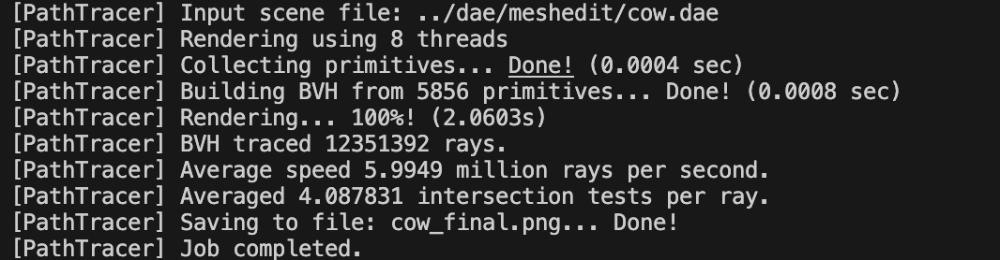
|
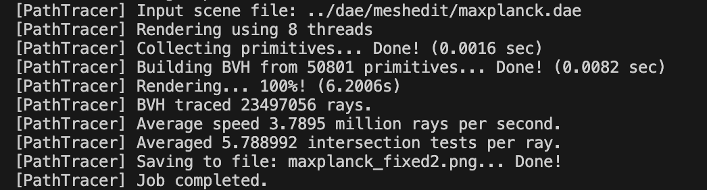
|
|
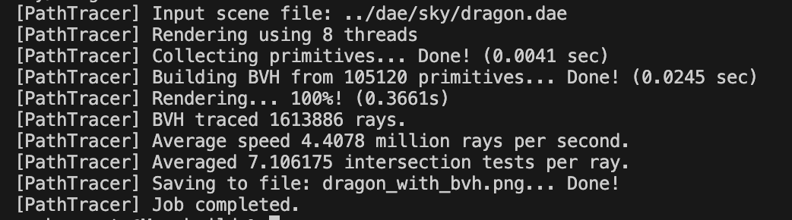
|
|
Part 3: Direct Illumination
Part 3.1The function
Vector3D DiffuseBSDF::f Calculates how much light is reflected from direction wi (incoming) to direction wo (outgoing), where it returns reflectance / PI. For DiffuseBSDF::sample_f, it generates a random incoming direction wi and returns the BSDF value for that direction.
then return by calling f(wo, *wi)
Part 3.2
Given Ray &r and Intersection &isect ,
PathTracer::zero_bounce_radiance returns the light that reaches the camera without bouncing off any of the objects in the scene. This is only the light that is coming from the light source, I used the BSDF of the surface at the point of intersection and returned its emission.
Then, updated est_radiance_global_illumination to return the zero-bounce radiance instead of normal shading.
Part 3.3: Direct Lighting with Uniform Hemisphere Sampling
In this approach, I randomly sample directions in the hemisphere above the hit point and check if those directions hit a light source.
The Algorithm Follows:
- Sample a random direction in the hemisphere above the hit point
- Cast a ray in that direction to see if it hits anything
- If it hits a light source, calculate the contribution from that light
- Average multiple samples to get the final estimate
Implementation below:
Vector3D PathTracer::estimate_direct_lighting_hemisphere(const Ray &r, const Intersection &isect) {
Matrix3x3 o2w;
make_coord_space(o2w, isect.n);
Matrix3x3 w2o = o2w.T();
const Vector3D hit_p = r.o + r.d * isect.t;
const Vector3D w_out = w2o * (-r.d);
Vector3D L_out(0, 0, 0);
for (int i = 0; i < ns_area_light; i++) {
double pdf;
Vector3D w_in = hemisphereSampler->get_sample(&pdf);
Vector3D w_in_world = o2w * w_in;
Ray sample_ray(hit_p, w_in_world);
sample_ray.min_t = EPS_F;
Intersection light_isect;
if (bvh->intersect(sample_ray, &light_isect)) {
if (light_isect.bsdf->get_emission().norm2() > 0) {
Vector3D L_i = light_isect.bsdf->get_emission();
Vector3D f = isect.bsdf->f(w_out, w_in);
double cos_theta = w_in.z;
L_out += f * L_i * cos_theta / pdf;
}
}
}
L_out /= ns_area_light;
return L_out;
}
Part 3.4: Direct Lighting with Important Sampling Lights
In this approach, I directly sample the light sources instead of random directions, this follow the same implementation as the previous part where it is much more efficient.
The Algorithm Follows:
- For each light source in the scene:
- Sample a point on the light
- Calculate the direction from the hit point to that light point
- Check if the path is unoccluded (no objects blocking the light)
- If unoccluded, calculate the contribution
Implementation below:
Vector3D PathTracer::estimate_direct_lighting_importance(const Ray &r, const Intersection &isect) {
Matrix3x3 o2w;
make_coord_space(o2w, isect.n);
Matrix3x3 w2o = o2w.T();
const Vector3D hit_p = r.o + r.d * isect.t;
const Vector3D w_out = w2o * (-r.d);
Vector3D L_out(0, 0, 0);
for (auto light : scene->lights) {
int num_samples = light->is_delta_light() ? 1 : ns_area_light;
Vector3D light_contribution(0, 0, 0);
for (int i = 0; i < num_samples; i++) {
Vector3D wi_world;
double dist_to_light;
double pdf;
Vector3D light_intensity = light->sample_L(hit_p, &wi_world, &dist_to_light, &pdf);
if (pdf < 1e-4 || light_intensity.norm2() < 1e-6) {
continue;
}
Vector3D wi = w2o * wi_world;
if (wi.z <= 0) {
continue;
}
Ray shadow_ray(hit_p, wi_world);
shadow_ray.min_t = EPS_F;
shadow_ray.max_t = dist_to_light - EPS_F;
Intersection shadow_isect;
if (!bvh->intersect(shadow_ray, &shadow_isect)) {
Vector3D f = isect.bsdf->f(w_out, wi);
double cos_theta = wi.z;
if (light->is_delta_light()) {
light_contribution += f * light_intensity * cos_theta;
} else {
light_contribution += f * light_intensity * cos_theta / pdf;
}
}
}
if (num_samples > 0) {
L_out += light_contribution / num_samples;
}
}
return L_out;
}
Compare the results between uniform hemisphere sampling and lighting sampling
The importance sampling method produces significantly cleaner images with less noise compared to uniform hemisphere sampling. This occurs because importance sampling focuses on sampling the actual light sources, while hemisphere sampling wastes computational effort by randomly sampling all directions, including those without light sources.
|
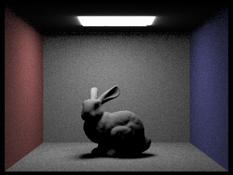
|
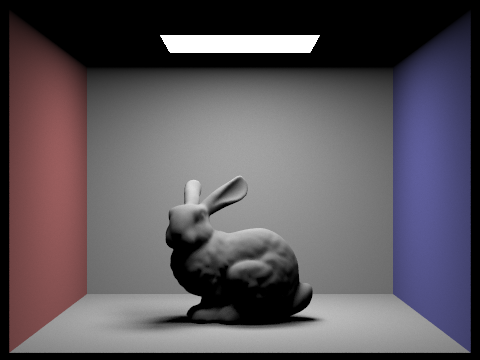
|
|
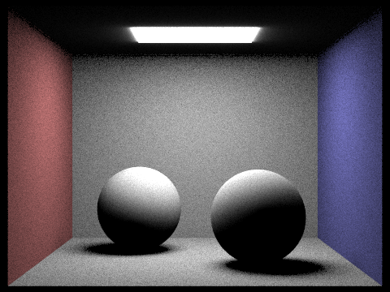
|
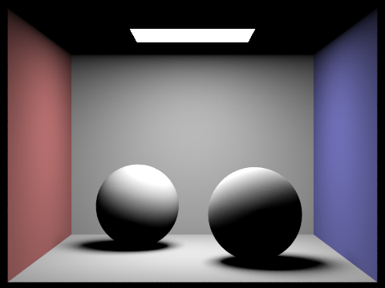
|